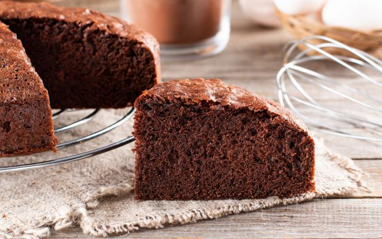

Chocolate Cake

Description
When it comes to a classic and delicious dessert, few options are as tempting as a good chocolate cake. This simple and easy-to-make recipe is the perfect solution to satisfy that craving for a delicious and pleasurable sweet treat.
Ingredients
- 3 eggs
- 1 and 1/2 cups of sugar
- 2 cups of flour
- 1 cup of cocoa powder or chocolate drink mix
- 1/2 cup of oil
- 1 tablespoon of baking powder
- A pinch of salt
- 1 cup of hot water
Steps
- In a blender, blend the eggs, sugar, oil, chocolate drink mix, and flour.
- Pour the batter into a bowl
- Add the hot water and baking powder, mixing well.
- Pour the batter into a greased baking pan and bake in a preheated medium-high oven (200°C) for 40 minutes.
- Remove from the pan while still hot.